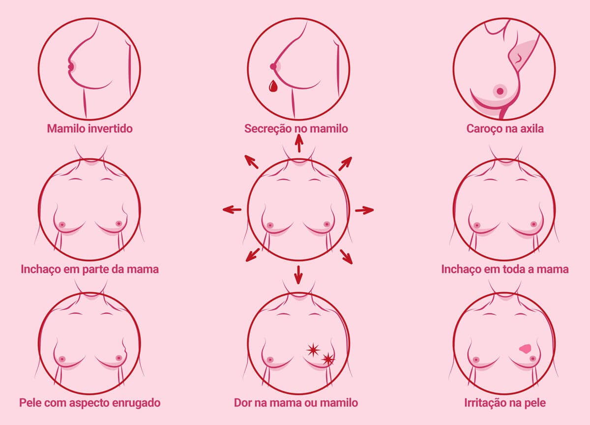

Fique atento aos sinais

- Caroço na mama ou na axila.
- Alterações no formato ou tamanho da mama.
- Vermelhidão ou alterações na pele.
- Alterações no mamilo.
- Saída espontânea de líquido pelo mamilo.
Importante!
Ao perceber qualquer alteração suspeita, procure uma unidade de saúde para avaliação de um profissional.